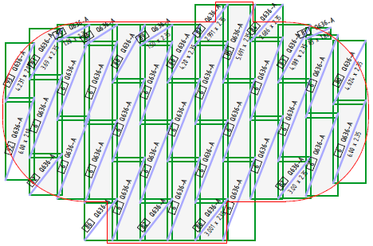
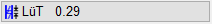
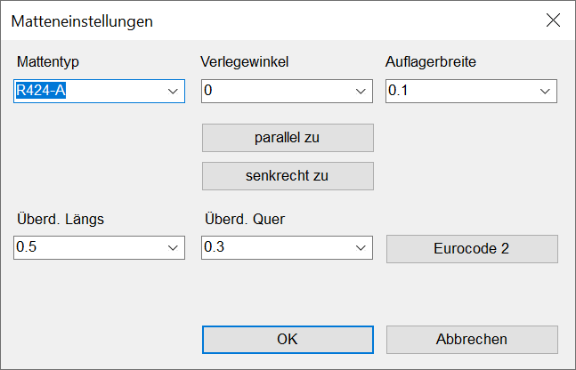

")

Verlegen von Matten desselben Formats in unregelmäßigen, polygonalen Bereichen. Innerhalb eines Polygons verlegte Matten bilden eine Gruppe und können als solche editiert werden.

Voreinstellungen |
Die Schaltflächen öffnen jeweils den Dialog "Matteneinstellungen" mit entsprechend voreingestellten Werten. |
|---|---|
Aktueller Mattentyp. |
|
 |
Längsüberdeckung (in Tragrichtung). |
Querüberdeckung. |
|
Auflagerbreite (Abstand). |
|
Drehwinkel. |
Mattenlage |
Beschreibung |
|---|---|
Auswahl der Mattenlage mit entsprechender Darstellung der Mattendiagonalen. |
Mattenverteilung |
Beschreibung |
|---|---|
Vert.1: ganze Matte unten links / Vert.2: ganze Matte unten rechts. |
|
Vert.3: ganze Matte oben links / Vert.4: ganze Matte oben rechts. |
|
Vert.5: ganze Matte in der Mitte. |
|
|
/+: Punkte hinzufügen; /-: Punkte entfernen; /x: Alle Punkte entfernen. |


Matteneinstellungen (Dialogbeschreibung)
Voreinstellungen für die Mattenverlegung im Polygon.

Mattentyp
Auswahl des Mattentyps.
Verlegewinkel
Auswahl des Verlegewinkels.
Verlegung parallel oder senkrecht zu einer vorhandenen Linie oder einem Text ausrichten. Klicken Sie das Element an, dessen Winkel Sie übernehmen möchten. [Linie oder Text für Winkel anklicken]. Der Verlegewinkel wird nach Anklicken einer Linie oder eines Texts im Auswahlfeld Verlegewinkel angezeigt. |
|
Auflagerbreite
Abstand von Linien oder Kreisbögen, die den Verlegebereich definieren.
Wenn Sie bei Wänden die Innenkanten im Uhrzeigersinn anklicken, werden die Matten mit dem eingestellten Wert auf die Wände gelegt.
Überd. Längs; Überd. Quer
Individuelle Angabe der Stoßüberdeckung in Längs- bzw. Querrichtung.
Berechnung der Stoßüberdeckung nach Eurocode 2. Öffnet den Dialog Überdeckung nach Eurocode 2.
» Überdeckung nach Eurocode 2 (Dialog)